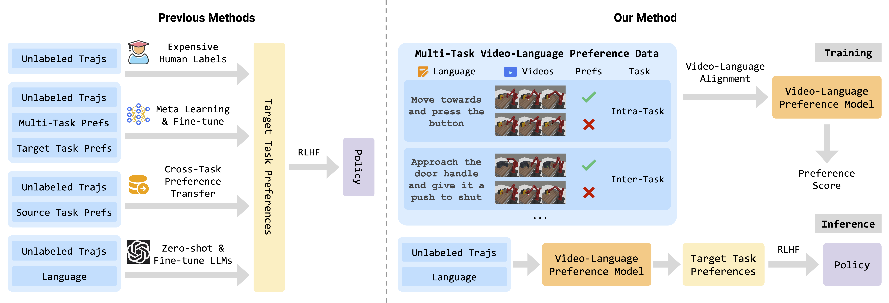

Reward engineering is one of the key challenges in Reinforcement Learning (RL). Preference-based RL effectively addresses this issue by learning from human feedback. However, it is both time-consuming and expensive to collect human preference labels. In this paper, we propose a novel Vision-Language Preference learning framework, named VLP, which learns a vision-language preference model to provide preference feedback for embodied manipulation tasks. To achieve this, we define three types of language-conditioned preferences and construct a vision-language preference dataset, which contains versatile implicit preference orders without human annotations. The preference model learns to extract language-related features, and then serves as a preference annotator in various downstream tasks. The policy can be learned according to the annotated preferences via reward learning or direct policy optimization. Extensive empirical results on simulated embodied manipulation tasks demonstrate that our method provides accurate preferences and generalizes to unseen tasks and unseen language, outperforming the baselines by a large margin.
In this paper, we propose a novel Vision-Language Preference alignment framework, named VLP, to provide generalized preference feedback for video pairs given language instructions. Specifically, we collect a video dataset from various policies under augmented language instructions, which contains implicit preference relations based on the trajectory optimality and the vision-language correspondence. Then, we propose a novel vision-language alignment architecture to learn a trajectory-wise preference model for preference labeling, which consists of a vision encoder, a language encoder, and a cross-modal encoder to facilitate vision-language alignment. The preference model is optimized by intra-task and inter-task preferences that are implicitly contained in the dataset. In inference, VLP provides preference labels for target tasks and can even generalize to unseen tasks and unseen language. We provide an analysis to show the learned preference model resembles the negative regret of the segment under mild conditions. The preference labels given by VLP are employed for various downstream preference optimization algorithms to facilitate policy learning.
Table 1: Success rate of RLHF methods with scripted labels and VLP labels. The results are reported with mean and standard deviation across five random seeds. The result of VLP is shaded and is bolded if it exceeds or is comparable with that of RLHF approaches with scripted labels. VLP Acc. denotes the accuracy of preference labels inferred by VLP compared with scripted labels.
Table 2: Success rate of VLP (i.e., P-IQL trained with VLP labels) against IQL with VLM rewards. The results are reported with mean and standard deviation across five random seeds. The result of VLP is shaded and the best score of all methods is bolded.
Table 3: Success rate of VLP (i.e., P-IQL trained with VLP labels) against P-IQL with VLM preferences (denoted with prefix P-). The results are reported with mean and standard deviation across five random seeds. The result of VLP is shaded and the best score of all methods is bolded.
Table 4: The correlation coefficient of VLM rewards with ground-truth rewards and VLP labels with scripted preference labels. Larger correlation means the predicted values are more correlated with the ground-truth.
Table 5: The generalization abilities of our method on 5 unseen tasks with different types of language. Acc. denotes the accuracy of preference labels inferred by VLP compared with ground-truth labels.
@misc{Anonymous,
title = {VLP: Vision-Language Preference Learning for Embodied Manipulation
},
author = {Anonymous Authors},
year = {2024},
}